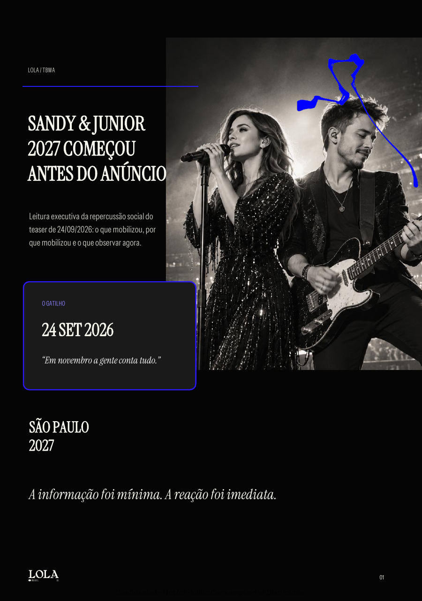
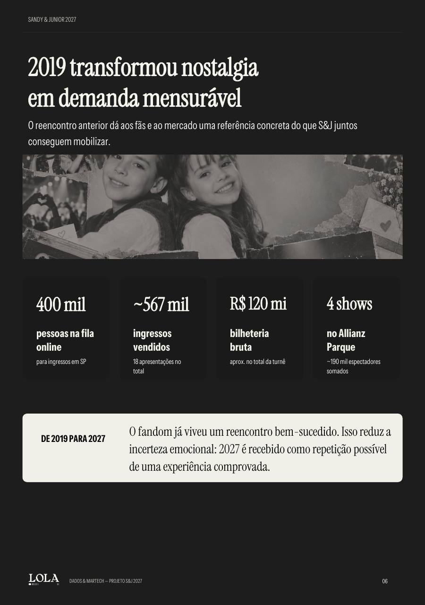
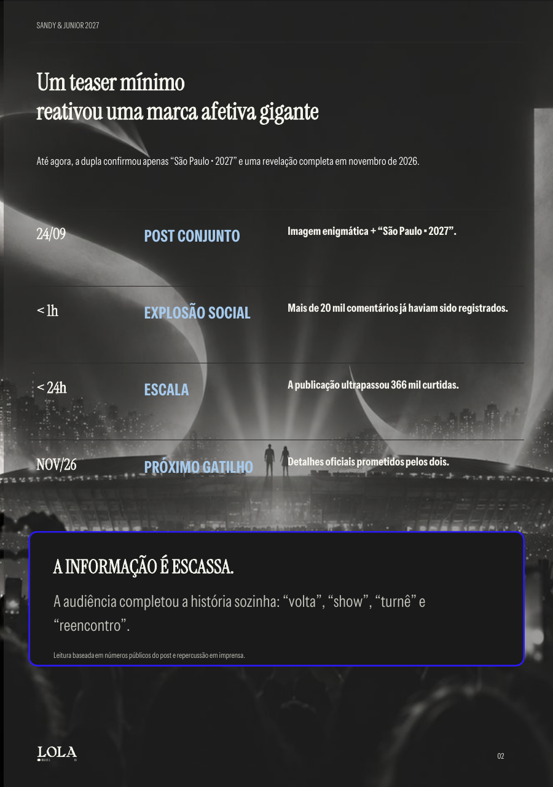

LOLA / TBWA
Sandy & Junior
2027 começou
antes do anúncio.
Uma leitura executiva da repercussão social do teaser de 24/09/2026: o que mobilizou, por que mobilizou e o que observar agora.
↓ explorar a leitura
O GATILHO24 SET 2026“Em novembro a gente conta tudo.”
O que aconteceu
Um teaser mínimo
reativou uma marca afetiva gigante.
Até agora, a dupla confirmou apenas “São Paulo · 2027” e uma revelação completa em novembro de 2026.
24/09POST CONJUNTO
Imagem enigmática + “São Paulo - 2027”.
< 1hEXPLOSÃO SOCIAL
Mais de 20 mil comentários já haviam sido registrados.
< 24hESCALA
A publicação ultrapassou 366 mil curtidas.
NOV/26PRÓXIMO GATILHO
Detalhes oficiais prometidos pelos dois.
A informação é escassa.
A audiência completou a história sozinha: “volta”, “show”, “turnê” e “reencontro”.
Leitura baseada em números públicos do post e repercussão em imprensa.A demanda antes do produto
A demanda apareceu antes
de existir um produto para comprar.
A força do sinal está na velocidade: dezenas de milhares comentaram em minutos e centenas de milhares curtiram antes de saber o que, de fato, será lançado.
O tom da conversa
A conversa é emocional
antes de ser racional.
Na amostra pública repercutida por imprensa, o tom visível é de euforia, urgência, nostalgia e curiosidade. Não há base pública suficiente para transformar isso em percentual de sentimento.
EUFORIA“Eu tô chorando no trabalho.”
INTERRUPÇÃO“Não vou conseguir pensar em mais nada hoje.”
FOMO“Já fazendo camiseta e faixa.”
NOSTALGIA“Eles estão presentes em todas as fases da minha vida.”
SURPRESA“Que isso! Gente, eu tenho família.”
CURIOSIDADE“Show? Turnê? Especial? Música?”
Por que isso funciona
Não é só saudade de música.
É memória de vida + escassez + prova de demanda.
Quatro mecanismos ajudam a explicar por que uma imagem quase sem informação gerou tanta repercussão.
01MEMÓRIA BIOGRÁFICA
A dupla acompanhou infância e adolescência de uma geração; fãs descrevem S&J como parte das próprias fases de vida.
02COMUNIDADE
O fandom gerou amizades, rituais, viagens e lembranças compartilhadas. O reencontro reativa essa rede social.
03RARIDADE
Desde 2007, encontros são excepcionais. A escassez transforma cada aparição conjunta em acontecimento.
04PROVA DE 2019
O último reencontro mostrou filas, ingressos esgotados e estádios: existe demanda emocional e material.
O “produto” desejado não é apenas um show. É reviver uma identidade coletiva por algumas horas.
A memória tem lastro
2019 transformou nostalgia
em demanda mensurável.
O reencontro anterior dá aos fãs e ao mercado uma referência concreta do que Sandy & Junior juntos conseguem mobilizar.

400 milpessoas na fila online
para ingressos em SP
para ingressos em SP
~567 milingressos vendidos
18 apresentações no total
18 apresentações no total
R$ 120 mibilheteria bruta
aprox. no total da turnê
aprox. no total da turnê
4 showsno Allianz Parque
~190 mil espectadores somados
~190 mil espectadores somados
DE 2019 PARA 2027O fandom já viveu um reencontro bem-sucedido. Isso reduz a incerteza emocional: 2027 é recebido como repetição possível de uma experiência comprovada.
O que é fato — e o que ainda é leitura
O mercado já chama de “volta”,
mas o formato continua aberto.
Separar fato de rumor é essencial para não transformar expectativa em informação.
- Há um projeto conjunto para 2027.
- São Paulo é a única praça explicitamente mencionada.
- Os detalhes serão revelados em novembro de 2026.
O próprio mistério funciona como mídia: enquanto novembro não chega, cada interpretação prolonga o ciclo de conversa.
A leitura final
O comeback já aconteceu
na cabeça do público.
Mesmo sem confirmação de turnê, o teaser já reativou memória, intenção e urgência. Novembro vai revelar se essa energia vira uma experiência pontual ou uma nova escala de Sandy & Junior.
Centenas de milhares reagiram a uma promessa sem produto, porque Sandy & Junior funciona como memória coletiva antes de funcionar como agenda de shows.
OBG.